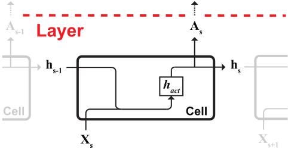

Convolutional Neural Network (CNN)¶
Layer architecture¶
-
class
nnlibs.rnn.models.RNN(hidden_size=10, activate=<function sigmoid>, activate_hidden=<function tanh>, initialization=<function xavier>, binary=False)[source]¶ Bases:
nnlibs.commons.models.LayerDefinition of a RNN layer prototype.
- Parameters
hidden_size (int) – Number of RNN cells in one RNN layer.
activate (function) – Activation function for output of RNN cells.
activate_hidden (function) – Activation function for hidden state of RNN cells.
initialization (function) – Weight initialization function for RNN layer.
binary (bool) – Set the RNN layer from many-to-many to many-to-one mode.
-
compute_shapes(A)[source]¶ Wrapper for
nnlibs.rnn.parameters.rnn_compute_shapes().def rnn_compute_shapes(layer, A): """Compute forward shapes and dimensions for RNN cell and layer. """ X = A # Input of current layer of shape (s, v, m) layer.d['s'] = X.shape[0] # Length of sequence (s) layer.d['v'] = X.shape[1] # Vocabulary size (v) layer.d['m'] = X.shape[2] # Number of samples (m) # Max length (l) between cells and sequence layer.d['l'] = max(layer.d['h'], layer.d['s']) # Output length (o) layer.d['o'] = 2 if layer.binary else layer.d['v'] # Shapes for parameters to compute hidden cell state to next cell hv = layer.fs['Wx'] = (layer.d['h'], layer.d['v']) hh = layer.fs['Wh'] = (layer.d['h'], layer.d['h']) h1 = layer.fs['bh'] = (layer.d['h'], 1) # Shapes for parameters to compute cell output to next layer oh = layer.fs['W'] = (layer.d['o'], layer.d['h']) o1 = layer.fs['b'] = (layer.d['o'], 1) # Shapes to initialize caches lvm = layer.fs['X'] = (layer.d['l'], layer.d['v'], layer.d['m']) hhm = layer.fs['h'] = (layer.d['h'], layer.d['h'], layer.d['m']) ohm = layer.fs['A'] = (layer.d['h'], layer.d['o'], layer.d['m']) return None
-
forward(A)[source]¶ Wrapper for
nnlibs.rnn.forward.rnn_forward().def rnn_forward(layer, A): """Forward propagate signal to next layer. """ # (1) Initialize cache and cell state X, hp = initialize_forward(layer, A) # Iterate through sequence to next cell for s in range(layer.d['h']): # (2s) Slice sequence (l, v, m) with respect to step X = layer.fc['X'][s] # (3s) Compute cell state h = np.dot(layer.p['Wx'], X) h += np.dot(layer.p['Wh'], hp) + layer.p['bh'] h = hp = layer.fc['h'][s] = layer.activate_hidden(h) # (4s) Compute cell output to next layer A = np.dot(layer.p['W'], h) + layer.p['b'] A = layer.fc['A'][s] = layer.activate(A) # Return layer.fc['A'] if many-to-many mode A = terminate_forward(layer) return A # To next layer
 \[X = A \tag{1}\]\[X_s = X[:, s] \tag{2s}\]\[h_s = h_{act}(W_x \cdot X_s + W_h \cdot h_{s-1} + b_h) \tag{3s}\]\[A_s = A_{act}(W \cdot h_s + b) \tag{4s}\]
\[X = A \tag{1}\]\[X_s = X[:, s] \tag{2s}\]\[h_s = h_{act}(W_x \cdot X_s + W_h \cdot h_{s-1} + b_h) \tag{3s}\]\[A_s = A_{act}(W \cdot h_s + b) \tag{4s}\]
-
backward(dA)[source]¶ Wrapper for
nnlibs.rnn.backward.rnn_backward().def rnn_backward(layer, dA): """Backward propagate signal through RNN cells to previous layer. """ # (1) Initialize cache and cell state dX, dhn = initialize_backward(layer, dA) # Iterate through reversed sequence to previous cell for s in reversed(range(layer.d['h'])): # (2s) Slice sequence (l, v, m) with respect to step dX = dX if layer.binary else layer.bc['dX'][s] # (3s) Compute partial derivative of cell state error dh = np.zeros_like(dhn) if layer.binary else dhn dh += np.dot(layer.p['W'].T, dX) dh = layer.bc['dh'][s] = dh * layer.activate_hidden(layer.fc['h'][s], deriv=True) # (4s) With respect to cell state dhn = layer.bc['dhn'][s] = np.dot(layer.p['Wh'].T, dh) # (5s) With respect to cell input dA = layer.bc['dA'][s] = np.dot(layer.p['Wx'].T, dh) dA = layer.bc['dA'] return dA # To previous layer
 \[dX = dA \tag{1}\]\[dX_s = dX[s] \tag{2s}\]\[dh_s = h_{act}'(h_s) \times (W.T \cdot dX_s + dh_{s+1}) \tag{3s}\]\[dh_{s+1} = W_h.T \cdot dh_s \tag{4s}\]\[dA_{s} = W_x.T \cdot dh_s \tag{5s}\]
\[dX = dA \tag{1}\]\[dX_s = dX[s] \tag{2s}\]\[dh_s = h_{act}'(h_s) \times (W.T \cdot dX_s + dh_{s+1}) \tag{3s}\]\[dh_{s+1} = W_h.T \cdot dh_s \tag{4s}\]\[dA_{s} = W_x.T \cdot dh_s \tag{5s}\]
-
compute_gradients()[source]¶ Wrapper for
nnlibs.rnn.parameters.rnn_compute_gradients().def rnn_compute_gradients(layer): """Update gradients with respect to weight and bias from RNN cells in layer. """ # Gradients initialization with respect to parameters for parameter in layer.p.keys(): gradient = 'd' + parameter layer.g[gradient] = np.zeros_like(layer.p[parameter]) # Iterate through reversed sequence for s in reversed(range(layer.d['h'])): h = layer.fc['h'][s] # Current cell state dX = layer.bc['dX'] if layer.binary else layer.bc['dX'][s] # Gradients with respect to layer output layer.g['dW'] += np.dot(dX, h.T) layer.g['db'] += np.sum(dX, axis=1, keepdims=True) X = layer.fc['X'][s] # Current cell input dh = layer.bc['dh'][s] # Current cell state error hp = layer.fc['h'][s - 1] # Previous cell state # Gradients with respect to cell output layer.g['dWx'] += np.dot(dh, X.T) layer.g['dWh'] += np.dot(dh, hp.T) layer.g['dbh'] += np.sum(dh, axis=1, keepdims=True) return None
\[\begin{split}\begin{align} dW_s &= dX_s \cdot h_s \\ db_s &= \sum_{j = 1}^n dX_{s_{ij}} \tag{A} \end{align}\end{split}\]\[\begin{split}\begin{align} dW_{x_s} &= dh_s \cdot X_s \\ dW_{h_s} &= dh_s \cdot h_{s-1} \\ db_{h_s} &= \sum_{j = 1}^n dh_{s_{ij}} \tag{B} \end{align}\end{split}\]